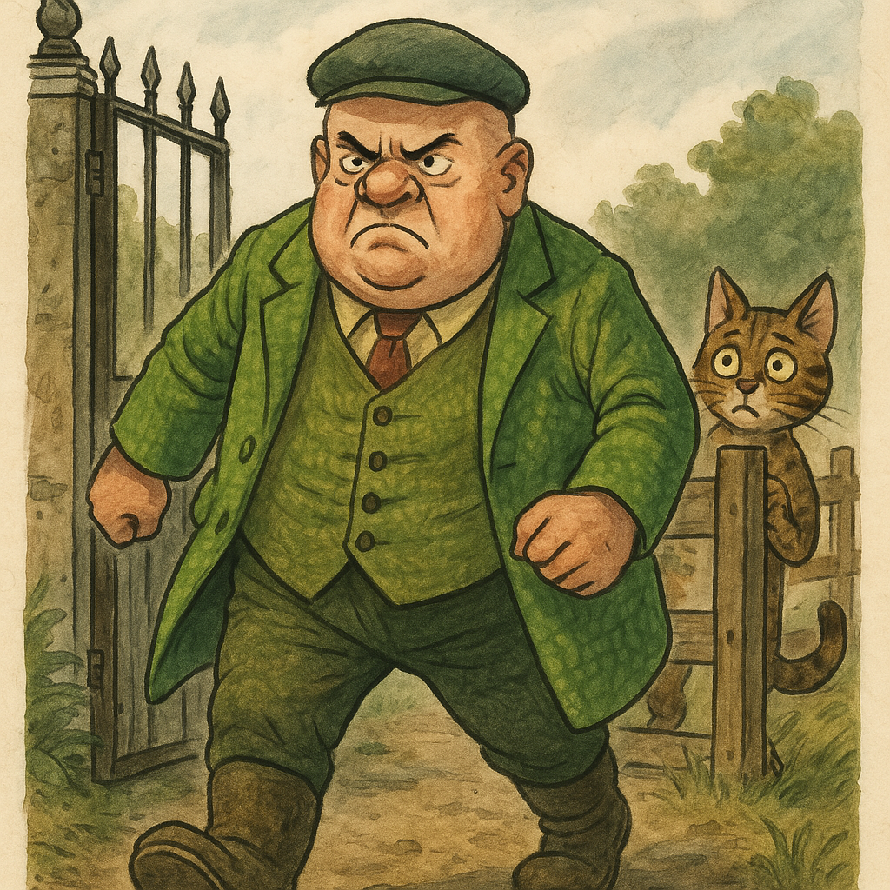
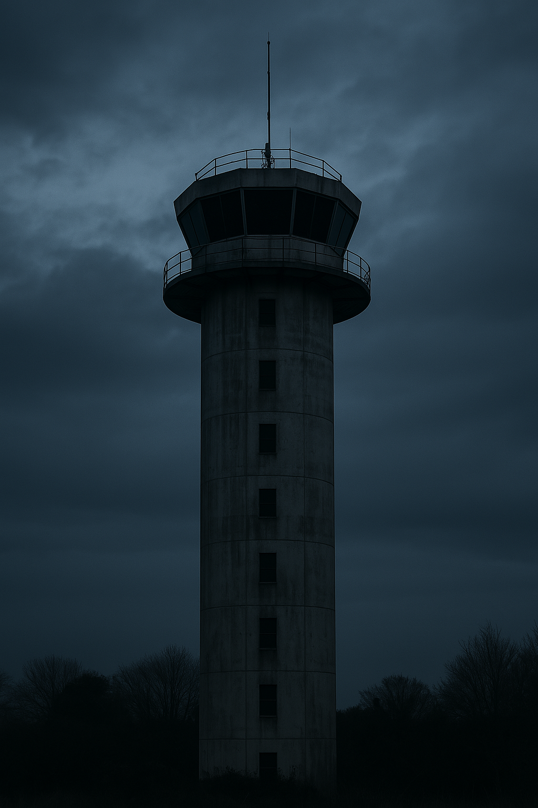
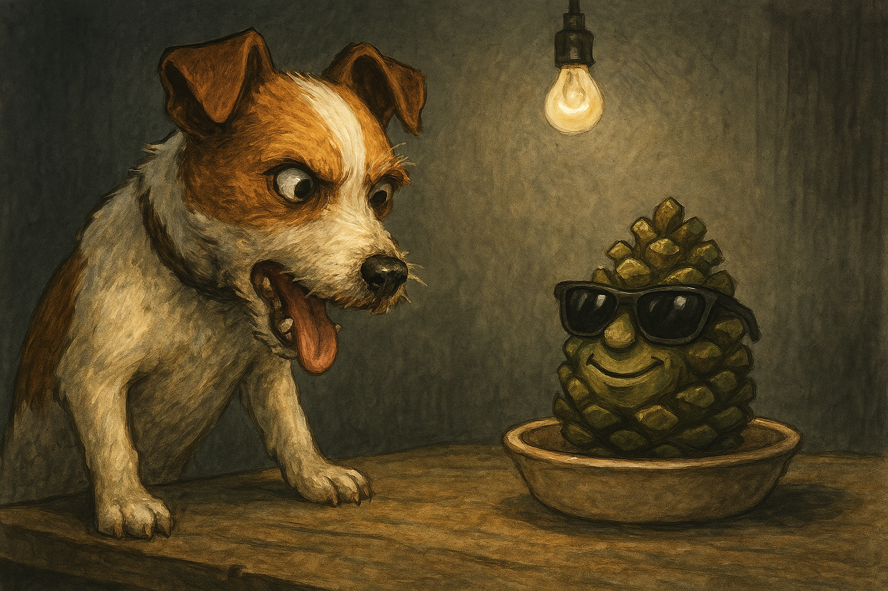

The UOC Observer
H'Online Since 2024 Fwend

Shocking Scenes h'in the Kittej H'Empjire today
The H’Empjire had a problem.
A fast-moving, post-flinging, barcode-crushing, biscuit-ignoring problem.
Post Chance.
He’d taken h’out two Kittling scouts, three Skirmishers, an Evri courier squad and what might’ve been a Sainsbury’s driver, though it was hard to tell. The UOC grounds bore the scars: crushed delivery slips, snapped mewsment lines, a half-written complaint to DPD flapping on a post.
So the H’Emperor summoned H’Allen to the throne room.
“You know what must be done,” the Emperor growled, his voice silky, dangerous.
H’Allen’s brow began to sweat.
“My liege… surely not him…”
The H’Emperor did not blink.
“Welease the Squire.”
The Squire was already waiting.
Real name: Howard Moore.
Rumoured farmer. Confirmed menace.
He bore the energy of an angry caravan forum in human form.
Barrel-shaped. Neckless. Face like a fistful of jammed fax machines. His coat — a beautiful green — could blind a kestrel at fifty yards. His gait? A full-body stomp. He did not walk. He loomed. And he came with opinions. So many opinions.
H’Allen crept toward the gate like a guilty binbag. He knew the rules: do not engage. Do not look him in the eyes. Do not, under any circumstance, allow him to mention farming subsidies.
He clicked the latch.
“Off you go then—”
“D’YOU KNOW WHAT I THINK’S THE PROBLEM WITH THIS COUNTRY?!”
Time stopped.
H’Allen froze. Air left his lungs. If he didn’t act now—
He shoved the Squire forward and flung himself behind a water butt, and thought h'of Deborah.
The Squire was already off, legs stomping like tanks, muttering about bastard H’Eddie Knowles, swinging his arms like threats.
Post Chance prowled the upper courtyards, eyes sharp.
The ruins of UOC lay around him, silent but watchful.
He glanced skyward. Looming above, the dark silhouette of UOC Tower — once the aerial control heart h’of the campus. Now it stood silent.
Post Chance lifted his Pjone h'and spoke.
Static.
“…Mjoore Check?” he whispered.
Nothing.
He checked his coordinates again. Glanced to the hedgerow. Made the call.
He’d proceed.
Then he heard it.
The gait. The weight. The wave of unrequested conversation radiating ahead like a fog horn of ignorance.
He turned.
There. Striding through the field. Coat billowing. Chin raised. Mouth open.
The Squire.
Post Chance’s escape routes blinked out, one by one. To flee would be rude. To hide — too late.
He turned to face his fate.
“GOT ANY POST FOR ME THEN?” the Squire bellowed. “NOT THAT IT’D BE ON TIME. SINCE THEY LET ALL THE BOATS IN...”
Post Chance drew his satchel. A full-force swing. Right to the knees.
It bounced off.
The Squire launched into a tirade on the 1972 Seed Licensing Fiasco — complete with union politics and Kettering scandal.
Post Chance’s ears wilted.
“Missione… accomplished.” whispered Shimmerwhisker from the bushes.
Somewhere in UOC…
“Hows he holding?”
“Fourteen hours straight. We h’aint got nuffink fwom him.”
Inside the room, Terry the Pinecone sat in a saucer. Unmoving. Sunglasses firm. Smile unbroken.
Muldoon stood in front of him, tongue lolling, eyes wild.
“So you still won’t bweak?”
Terry did not respond.
Then—
A paw on Muldoon’s shoulder. McGee.
“Take a bweak, fwend. Let’s me handle this. Gjood Kittej/Bad Kittej h'and h'all”
Muldoon nodded. Left.
McGee faced Terry. Waited. Then spoke.
“You just keep holding h’on, fwend.”
Terry’s look didn’t change.
McGee revealed his scars. “Yous weally h’upset the h’Emperor. He’s not a kitty to be cwossed. I ljearned the hjard way.”
“The ljonger you hjold h’out… the h’angwier he gets.”
The door creaked open.
McGee turned. Then smiled.
“You sooner than I fought… but fewer.”
The Hippies entered — Hendrix Haze and the Ginsberg Guild.
“They weleased… the Squire.”
McGee’s head shook. “Kittehs’ll go to h’any lengffs.”
“Muldoon won’t be ljong so I’ll be quick. Kitteh H’Empjire stwong. Behbejs Devşirme begun. Their wesolve h'is beginning to bweak, soon they’ll have loyal Behbejs everywhere.”
“No word on Hon. They gots him locked away. Sjafe.”
“Scratchulus is a bjad Kitteh. H’if we can’t get the Daisy bjack, we’ll never get UOC h’eiffer.”
He smirked.
“They h’never check UOC Tower doe. Messages can still cjome fwom there.”
“What about Terry?”
McGee smiled. “He’s tuff. H’and now… he knows he’s not h’alone.”
The Hippies slipped out. Muldoon returned.
“All quiet?”
“Nuffink,” said McGee. “Not h’even a whisper.”
Terry said nothing.
But the vibe? Unbreakable.